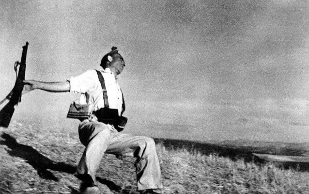

Un combattente spagnolo viene colpito a morte sul fronte Andaluso

Un contadino siciliano fornisce indicazioni ad un soldato americano

Un soldato alleato emerge dalle fredde acque di Omaha Beach
Robert Capa: un fotografo in guerra
Questa progetto realizzato nell'ambito delle Digital Humanities mira a conservare, catalogare e rendere facilmente fruibile il materiale riguardante il famoso fotoreporter americano Robert Capa. La sua storia, i suoi magnifici scatti ed i suoi scritti che documentano un mondo in guerra ed il ruolo chiave svolto dalla fotografia in tutto questo.
Photographer Robert Capa during the Spanish civil war, May 1937. Photo by Gerda Taro